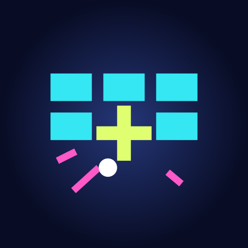
GOOGLE PLAY · MATERIALS 1.0.3
ブロック崩しに耐えろ！
hatake716 / acesmash@gmail.com
日本語・英語の実画面、動画、ストア文章の確認用ページです。Google Play・YouTube・公開Webサイトへの掲載は未実施です。
日本語
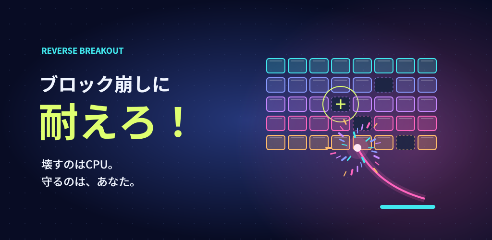
簡単な説明 / Short description · 56 characters
壊すのはCPU、再生するのはあなた。指一本で40個のブロックを守り、加速する玉とスコアに挑む逆視点のブロック崩しTXT
詳しい説明 / Full description · 989 characters
壊すのはCPU。よみがえらせるのは、あなた。 「ブロック崩しに耐えろ！」は、ブロックを守る側で遊ぶ逆視点の耐久ゲームです。あなたはブロックを再生する神。CPUが操るパドルと玉に立ち向かい、最後の１個を壊されるまで、どれだけ長く耐えられるかを競います。 ■ 指一本で、崩れた盤面を立て直す 横８×縦５、合計40個のブロック。壊された場所をタップして指を離すと、そのブロックが再生します。どこを守るか、いつ再生するか。少しの判断が次の１秒を変えます。 同時に２本以上の指で触ると「ズルはダメ！」。３秒間、再生できなくなります。その間も玉は止まりません。 ■ ７秒ごとのスロットで、CPUが変わる 画面右下の１列スロットが７秒ごとに止まり、全９種類から効果が発動します。 ・玉が３個増える ・現在の玉の速度が２倍、または３倍になる ・５秒間、玉がブロックを貫通する ・５秒間、ブロックに当たった玉が２個に分裂する ・玉数を１個、または速度を初期値に戻す ・玉が５個増え、５秒間貫通する ・速度が３倍になり、５秒間分裂する 速度倍率は掛け算で重なり、貫通と分裂の再当選は残り時間に５秒加算。危険な組み合わせの直後にリセットが出ることもあります。次の出目で、盤面の緊張感が変わります。 スロットはCPUの効果を決める仕組みです。コイン購入、賭け、賞金や換金はありません。 ■ 耐えるほど、スコアが伸びる スコアは生存時間を秒に換算した値の２乗。10秒なら100、30秒なら900、60秒なら3,600。生存時間とスコアはプレイ中に更新され、時間は小数点以下４桁で表示します。 終了したゲームの上位100件を、この端末のランキングに保存。自分の記録を何度でも追いかけられます。 ■ ネオンの花火と、オリジナルサウンド ブロックが壊れるたび、ネオン色の粒子が弾け、電子音が鳴ります。電子音・ピアノ・ドラムを組み合わせたオリジナルBGMとともに、次々と変わる盤面を守り抜きましょう。 ■ 自分のペースで遊べる ・インターネット接続不要 ・アカウント登録、広告、アプリ内購入なし ・一時停止と途中のゲームの保存に対応 ・BGM、効果音、振動を個別に設定 ・光と粒子の演出を控えめにする設定 ・端末の最優先言語が日本語なら日本語、それ以外は英語表示 最後の１個まで、耐えろ！TXT
更新内容 / Release notes · 95 characters
日本語・英語の自動切り替えに対応。全９種類のCPUスロット、端末内の上位100件ランキング、途中のゲームの保存を搭載しています。アプリ内からプライバシーポリシーを確認できるようになりました。TXT
動画投稿文 / Video description · 119 characters
CPUが壊すブロックを、指一本で再生する逆視点の耐久ゲーム。実際のゲームプレイを収録しています。 開発者：hatake716 お問い合わせ：acesmash@gmail.com 音楽・効果音：このゲームのために制作したオリジナル音源。TXT
{kind=link}
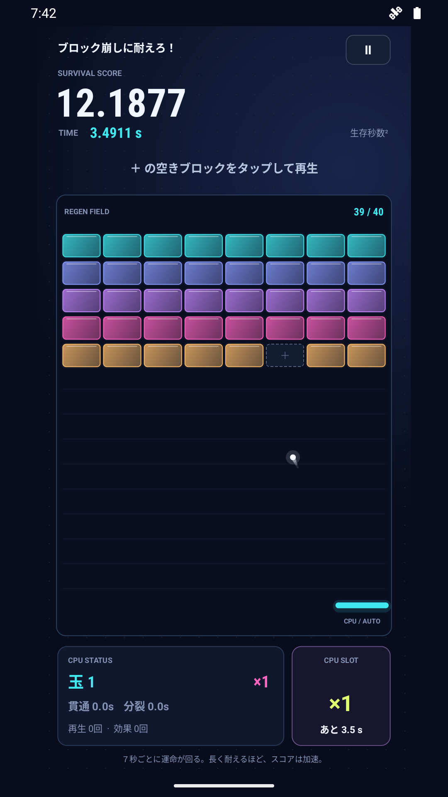
{kind=link}
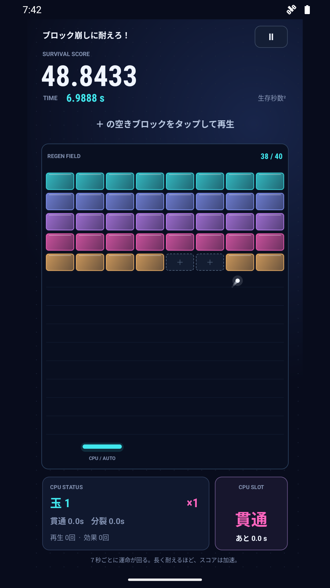
{kind=link}
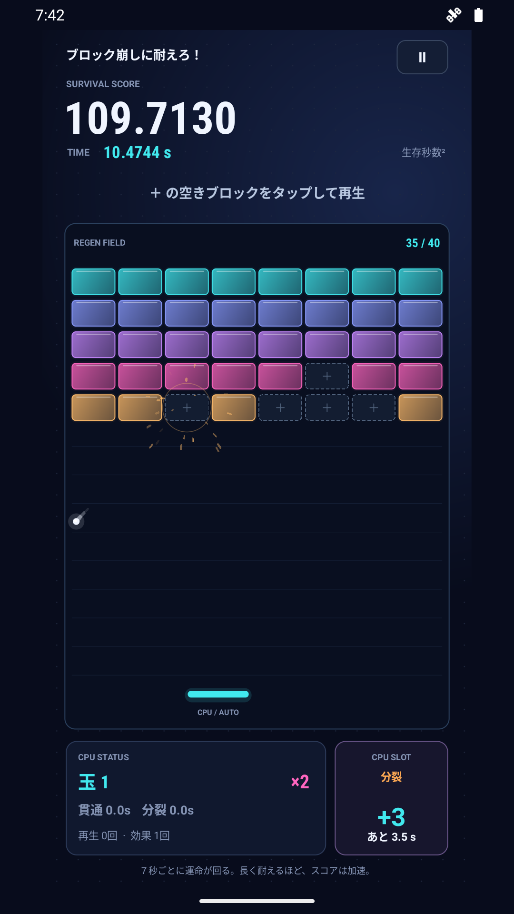
{kind=link}
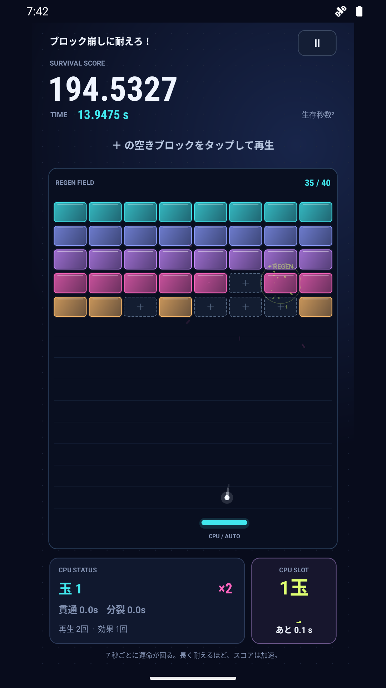
{kind=link}
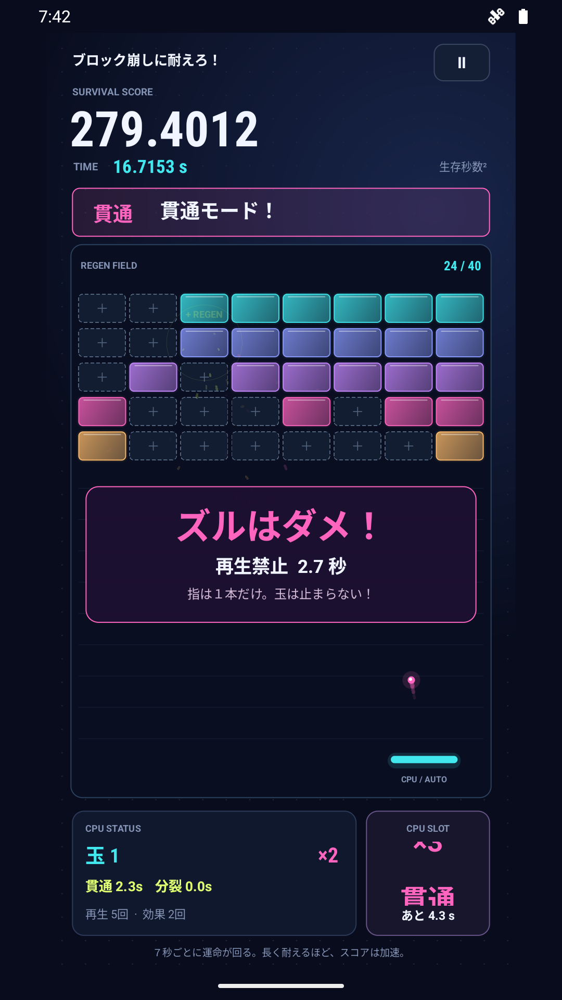
{kind=link}
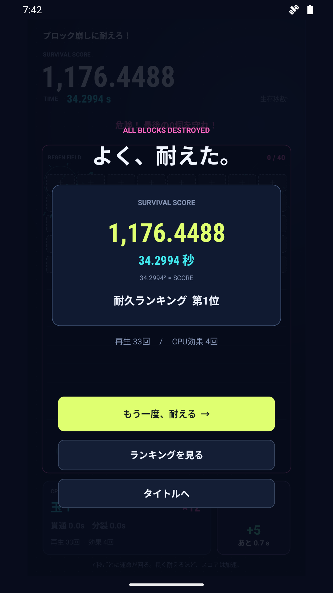
{kind=link}
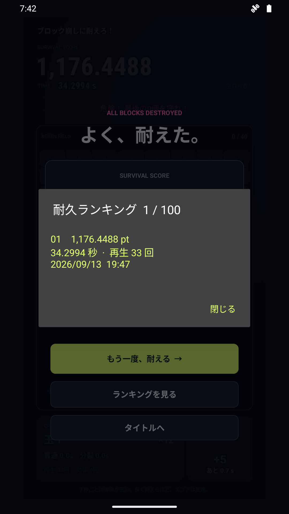
{kind=link}
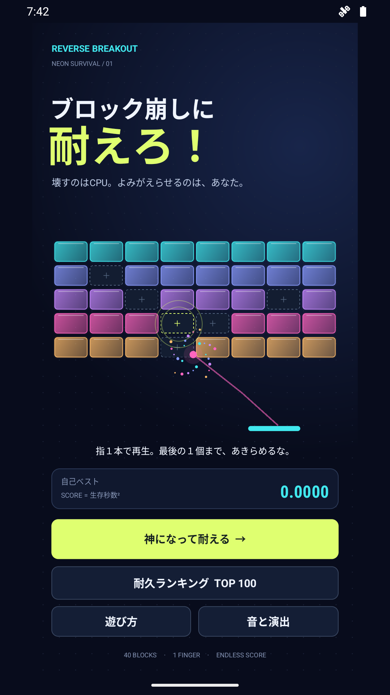
English
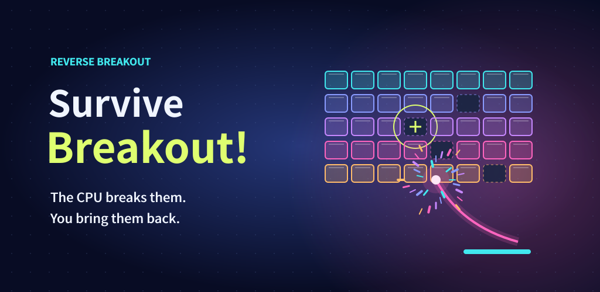
簡単な説明 / Short description · 78 characters
Rebuild 40 blocks with one finger as CPU power-ups stack and your score climbsTXT
詳しい説明 / Full description · 2214 characters
The CPU breaks them. You bring them back. Survive Breakout! puts you on the other side of the classic arcade game. You are the god who rebuilds blocks. Keep the CPU from destroying all 40, and see how long you can defend the very last one. REBUILD WITH ONE FINGER The arena contains eight columns and five rows of blocks. Tap an empty space and lift your finger to rebuild that block. Choose where to restore the wall as the balls keep moving. Touch with two or more fingers at once and a NO CHEATING! alert locks regeneration for three seconds. The CPU keeps playing during the penalty. A NEW CPU EFFECT EVERY SEVEN SECONDS The single-column slot in the bottom right stops every seven seconds and selects one of nine outcomes: - Add three balls - Double the current ball speed - Triple the current ball speed - Pierce blocks for five seconds - Split each ball into two when it hits a block, for five seconds - Reset the ball count to one - Reset ball speed to its initial value - Add five balls and pierce for five seconds - Triple the current speed and split for five seconds Speed multipliers stack. Winning pierce or split again adds five seconds to the remaining duration. A reset can change the situation just when the arena gets dangerous. The slot only selects CPU gameplay effects. There are no coin purchases, wagers, cash prizes or cash-outs. SURVIVE LONGER. SCORE HIGHER. Your score is survival time in seconds squared: 10 seconds earns 100 points, 30 earns 900, and 60 earns 3,600. Time and score update during play, with survival time displayed to four decimal places. Your best 100 completed runs are saved in a ranking on this device. Keep chasing your own record. NEON FIREWORKS, ORIGINAL MUSIC Every shattered block bursts into neon particles with an electronic sound effect. An original soundtrack blends synth, piano and drums as the arena gets more intense. PLAY AT YOUR OWN PACE - Works offline - No accounts, ads or in-app purchases - Pause and save an unfinished game - Separate music, sound effect and vibration settings - Option to reduce flashes and particles - Japanese when Japanese is the device's first language; English otherwise Defend the last block. Survive Breakout!TXT
更新内容 / Release notes · 155 characters
Automatic Japanese and English support, nine CPU slot outcomes, local top-100 rankings and saved games. The privacy policy is now available inside the app.TXT
動画投稿文 / Video description · 229 characters
A reverse breakout survival game. Rebuild the blocks with one finger as CPU effects stack. Recorded from actual gameplay. Developer: hatake716 Contact: acesmash@gmail.com Music and effects: original audio created for this game.TXT
{kind=link}
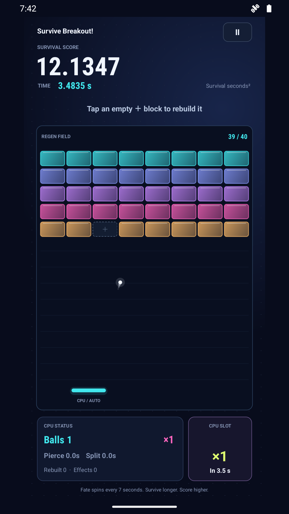
{kind=link}
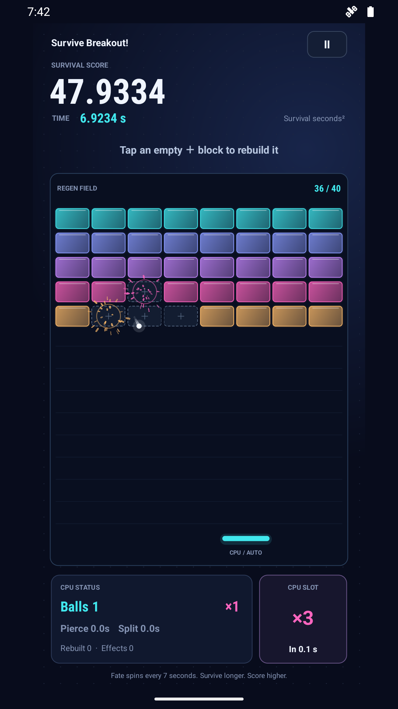
{kind=link}
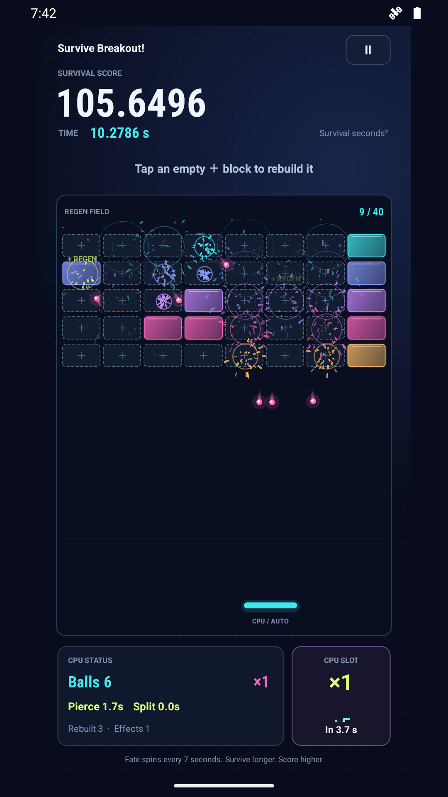
{kind=link}
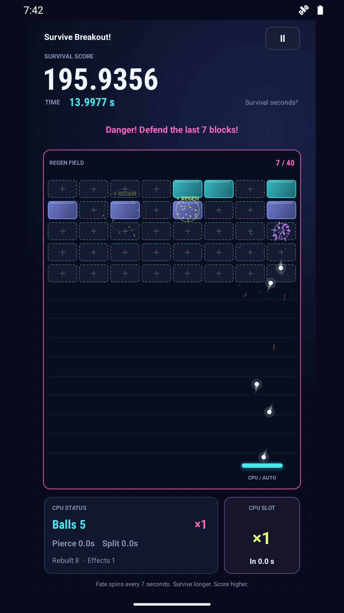
{kind=link}
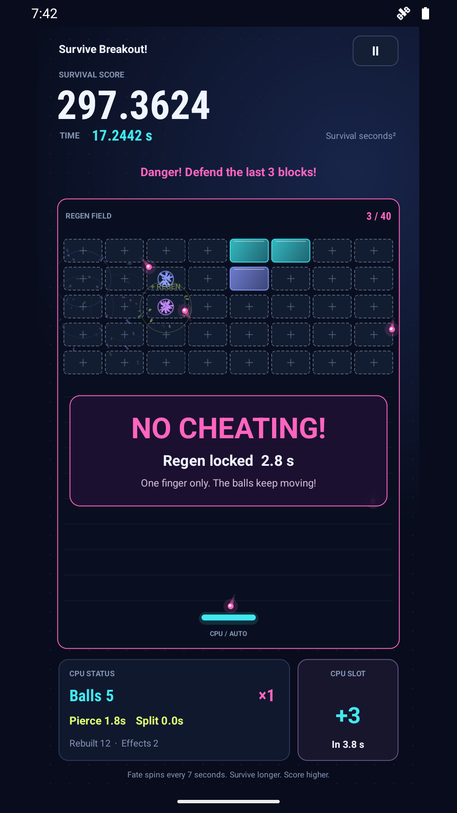
{kind=link}
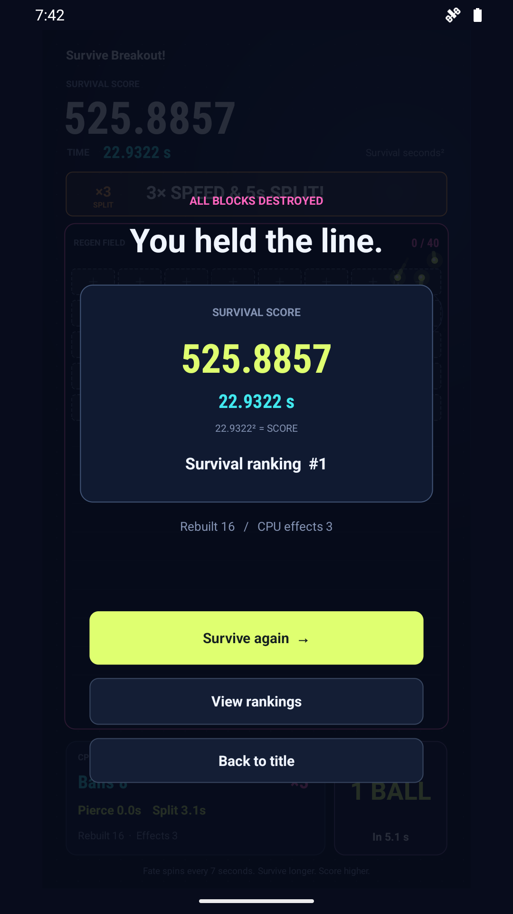
{kind=link}
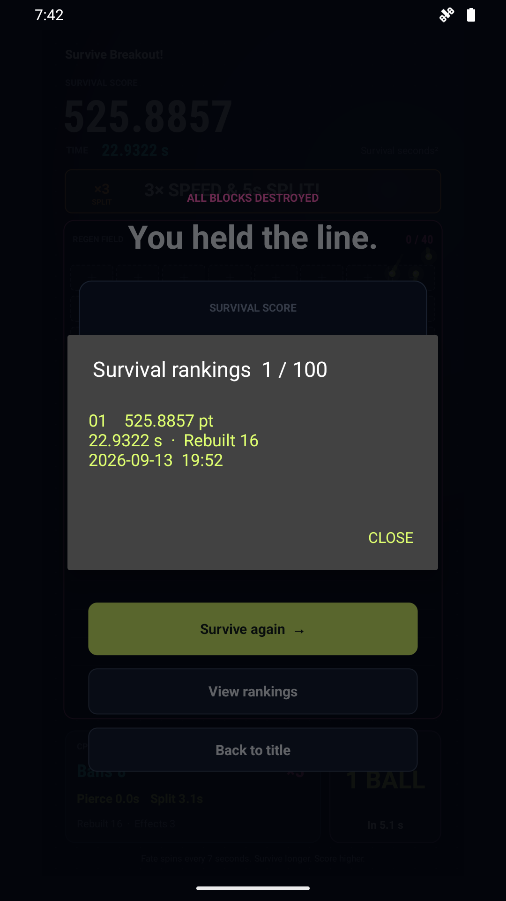
{kind=link}
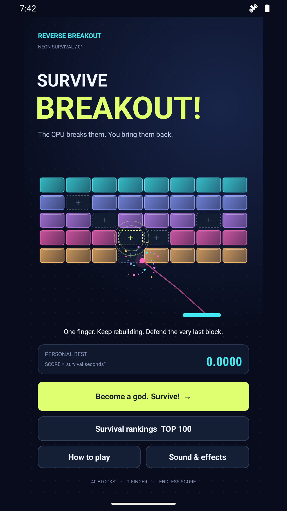